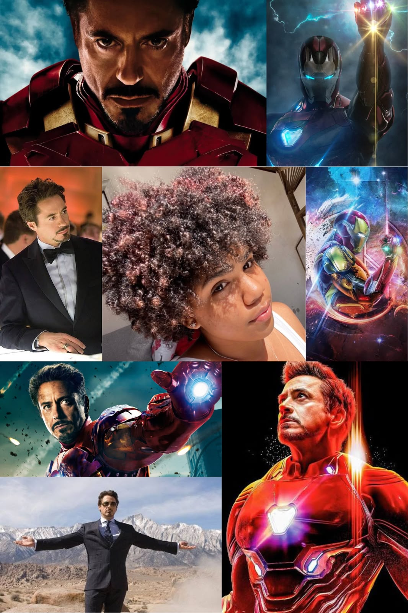
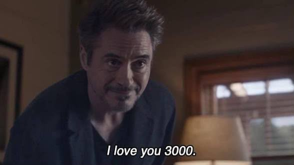

para ti
Miranda
Feliz día 🌼
para ti
Feliz día 🌼
lo que la mueve
Para cuando suena The Weeknd y la ciudad se siente hecha de luces rojas y neón.
Siempre con una historia entre manos, esperando el próximo capítulo en la mesita de noche.
Y para cuando sientas que todo el mundo está en tu contra, escucha esto.
EscucharLo sentí así, aunque no fuera conmigo.
Escuchar

❤️
hasta la próxima, Miranda 🌼